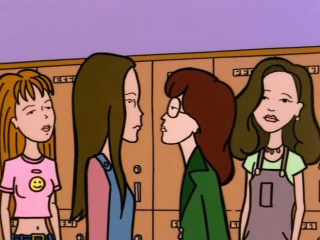

Episode Guide
Episode Guide
|  |
Too Cute Episode #109 - June 16, 1997 Written by Larry Doyle Song List Entries For This Episode Oops! List Entries For This Episode Transcript For This Episode |
|
Previous "Pinch Sitter" (#108) |
Next "The Big House" (#110) |
|
Cast |
|---|
|
Regular:
Daria,
Quinn,
Helen,
Jake,
Jane,
Brittany,
Kevin,
Upchuck,
Sandi,
Stacy,
Tiffany,
Joey,
Jeffy,
Jamie,
Andrea,
Ms. Barch
Guest: Brooke, Dr. Shar Non-Speaking: Mack |
|
Plot |
|
Summary:
When a classmate has plastic surgery to get a new nose, Quinn is convinced that she's "less than perfect" and needs plastic surgery herself in order to stay competitive in the cuteness department. |
|
Interesting Tidbits |
Continuity:
|
|
Memorable Quotes |
|
Sandi - Example: I would never tell Quinn that she looks cute in that thing she always wears. Quinn - I don't have a "thing" that I always wear. Sandi - If you say so. Quinn - I have lots of things which I wear at different times, far apart in time. Sandi - As you wish. Sandi - Quinn, there's that girl you know. Let's ask her. (starts waving) Hello! Quinn's cousin or something. (down the hallway, Daria and Jane are talking; they look to see Sandi waving for Daria to approach, and Quinn crossing her arms to tell Daria not to approach) Daria - You'll have to excuse me. My sister wants me to stay away. (walks away as Jane smirks) Quinn - What's rhinoplasty? Daria - Exactly what it sounds like. Quinn - Well, they could use it, I guess. Guy - We've been here an hour! When's my girlfriend gonna get her new rack? Receptionist - Dr. Shar is very busy, sir. Quinn Morgendorffer! Guy - Hey, wait! We were here first! (sees Daria walk past) Oh, whoa, emergency. I understand. Dr. Shar - All right, funny gal, your turn! Daria - No. Thank you. Dr. Shar - Nothing to be afraid of. Daria - I'm not afraid. Dr. Shar - It'll be fun! Daria - I don't like fun. Daria - So, first she tells Quinn that she can fix her up for six thousand dollars. Jane - Miss Pert 'N Pretty? What can she possibly need for six G's, other than a new personality? Daria - Wait, there's more. Then she announces for twenty grand, she can fix me. Which means she can make me look like Quinn. Jane - Sheesh, what would you want to look like that loser for? She needs six thousand dollars' worth of plastic surgery! Jane - Oh, Daria, don't be shy. Show me your boobs. (with a sigh, Daria brings out the implant box and opens it) Jane - Hmm. Why did I think this would be more interesting? (Upchuck holds up implant in one hand) Upchuck - Hmmm. Call me country bumpkin, but... what is it? Jane - It's a fake boob. (Upchuck shudders, drops the implant back in the box, and runs away with a screaming case of the willies) Jane - I guess he's not quite ready for a physical relationship. Quinn - I need to borrow six thousand dollars. Daria - I don't have six thousand dollars. Quinn - It's an emergency! Jane - Well, if it's an emergency... (reaches into pocket) Daria - I can't have this on my conscience. Quinn - You don't have a conscience. Daria - What I meant was, I don't feel like it. Quinn - You've got to! Where else am I gonna get six thousand dollars? Jane - Take up a collection? (Quinn smiles in appreciation and exits) Daria - You're paying for my therapy. (in the girls bathroom; Quinn is making her sales pitch to Andrea, who is applying eye makeup) Quinn - So you see, when you contribute to my surgery, it's like we're all sharing the surgery. We're making a statement about solidarity! Andrea - Solidarity? Quinn - You know, sisterhood is powerful! Andrea - Aren't you a little worried that there may be a hell? Boy #1 - So, what do we get if we pledge? Quinn - You get to look at me walking around like this all day. (shows picture from Dr. Shar) Boy #2 - No, like, what do we get? (both boys laugh, sounding vaguely reminiscent of a certain idiot duo from Highland, Texas) Quinn - The same thing you're getting now: nothing. (Quinn exits, leaving both boys confused) Quinn - I mean, I like being attractive and popular. It's, like, me, okay? So if Dr. Shar makes everyone else attractive and popular, then I'll have to be even more attractive just to keep up, and then if they, like, go back her to catch up to me, then I'll have to go back, and pretty soon it'll be like one of those vicious things! (melodramatic tone) Where will it end Daria? Where will it end? Quinn - Yeah, now she looks even less cute than she did before. Maybe the Fashion Club should send her flowers or something. I mean, since I guess she won't be joining anytime soon. Daria - You all must be very upset about that. Quinn - Hmm. Well, we're like a built-in support group for each other. Daria - A regular Khmer Rouge. Quinn - Well, blush is more like it. |
|
Mike Quinn's Delayed Reaction Review |
|
Insecure:
With Dr. Shar preying on Quinn and the Fashion Club and attempting to woo Daria, one thing that could have slipped past everyone is Helen's insecurity. During a conversation about Brooke's nose job, she plunged herself into a tirade about how women are judged more by their looks than men are (which is true, but beside the point) that ended with her contemplating getting a boob job. |